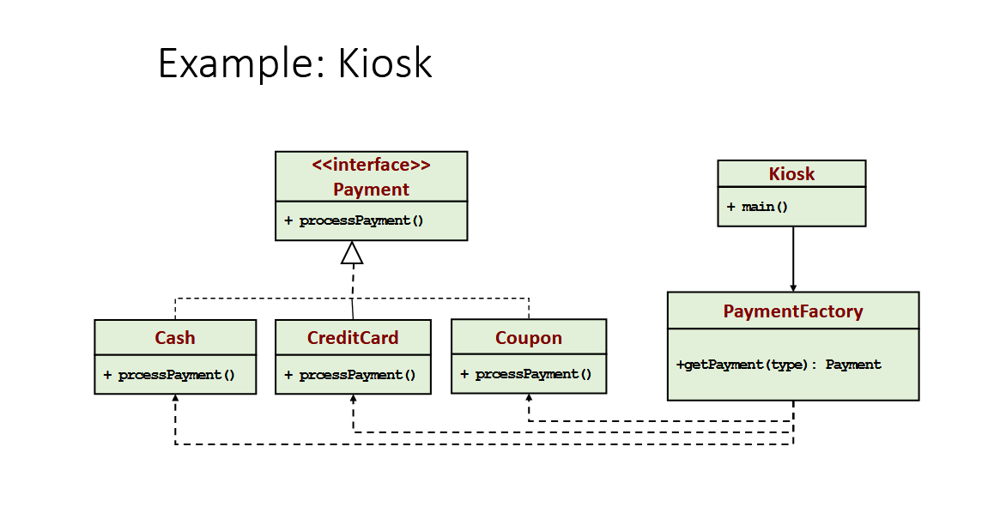
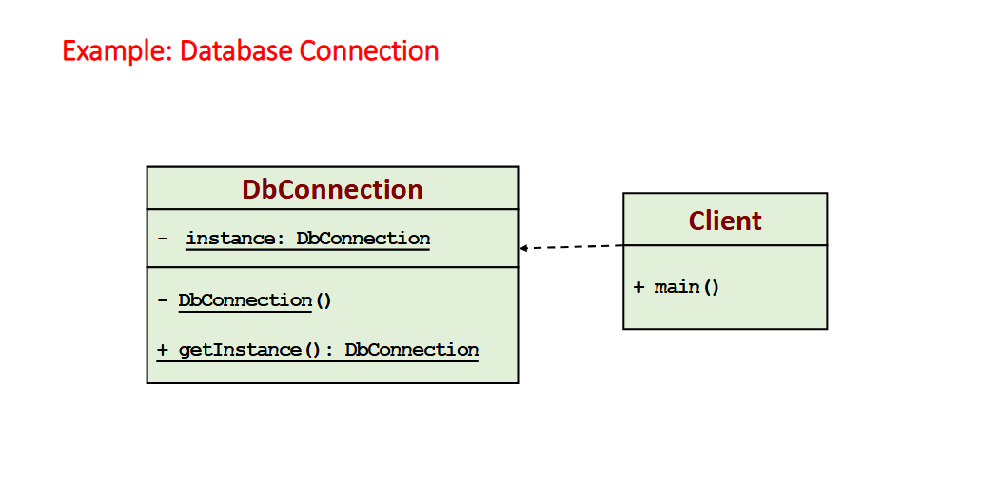
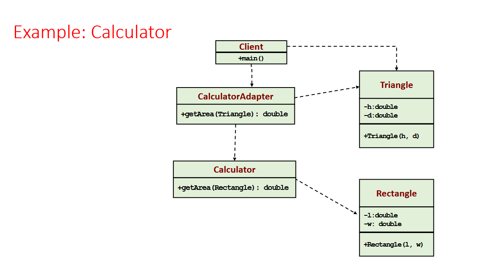
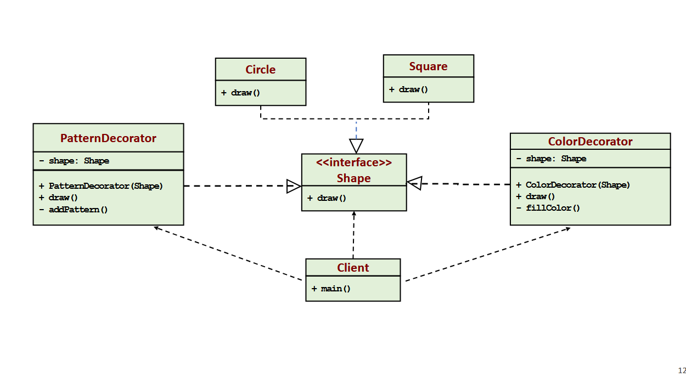
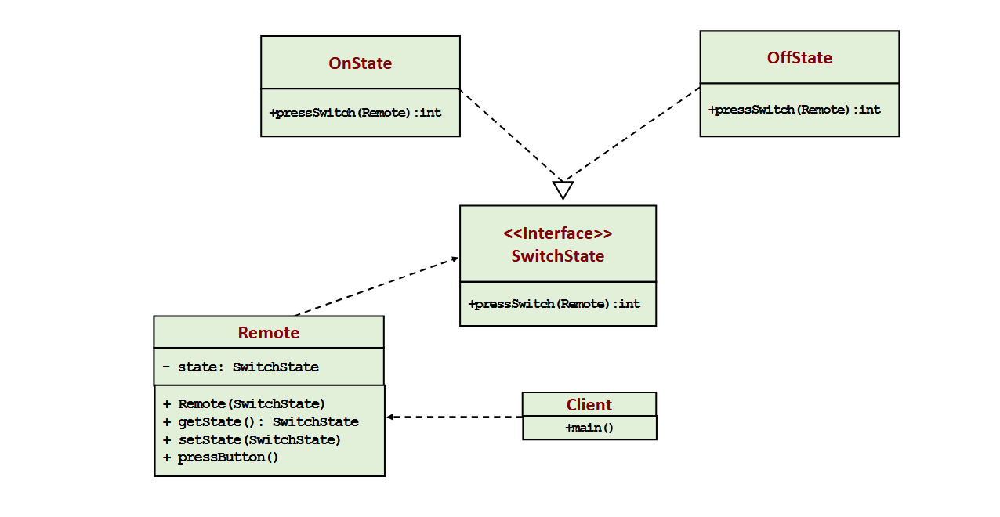

Software Design Patterns
Core Theory
What is a Design Pattern? A standard solution to a common programming problem. It is a description or template that can be reused in many different situations.
- Flexibility: Makes code more efficient and adaptable.
- Understandability: Increases the clarity of the program for other developers.
- Loose Coupling: Ensures components are not overly dependent on each other.
The "Gang of Four" (GoF): The originators who defined 23 patterns across 3 categories.
UML Diagram Legend (Essential for Diagrams)
| Solid Line + Hollow Triangle | Inheritance / Generalization: "Class A extends Class B". Indicates a child class inheriting from a parent. |
| Dashed Line + Hollow Triangle | Implementation / Realization: "Class A implements Interface B". |
| Dashed Line + Open Arrow | Dependency: "Class A uses Class B". A change in B may affect A. |
| Solid Line + Diamond | Composition / Aggregation: "Class A has a Class B". Indicates a part-whole relationship. |
1. Creational Patterns
Concerned with how objects are instantiated. It abstracts the instantiation process.
A. Factory Method
Defines an interface for creating an object, but lets subclasses decide which class to instantiate.

Consequences:
- Removes the instantiation of actual implementation classes from client code.
- Makes code robust and easy to extend.
- Provides abstraction through inheritance.
B. Abstract Factory
Provide an encapsulation mechanism to a group of factories. Each factory is accessed through an abstract factory class.

Key Takeaway:
- Known as a "Factory of Factories".
- Promotes consistency among related products (e.g., matching engines to specific wheels).
C. Singleton
Ensures a class has only one instance and provides a global point of access to it.

Key Features:
- Facilitates Lazy Initialization (created only when needed).
- Uses a Private Constructor and a Static
getInstance()method.
2. Structural Patterns
Concerned with how classes and objects are combined to form larger structures.
A. Adapter Pattern
Helps communication between two incompatible interfaces. Resolves mismatches so pre-existing classes can be used.

Mechanism:
- An Adapter class takes responsibility for resolving incompatibilities.
- The Client is unaware of the complexity of the conversion.
B. Decorator Pattern
We cannot modify existing functionalities, but we can extend them by recursively wrapping objects.

Philosophy:
- "Pay as you go" approach.
- Open for extension, closed for modification.
3. Behavioral Patterns
Concerned with how objects communicate and the assignment of responsibilities between objects.
A. State Pattern
Allows an object to alter its behavior when its internal state changes. Behavior is a function of its state.

Key Point:
- The object changes its behavior at run-time.
- Example: Traffic lights switching from Green to Yellow to Red.
B. Strategy Pattern
Defines a family of algorithms and makes them interchangeable. Selects behavior dynamically at runtime.

Key Point:
- Encapsulates different algorithms (e.g., BubbleSort vs QuickSort) into separate strategy classes.
- Allows switching between methods without changing the client.